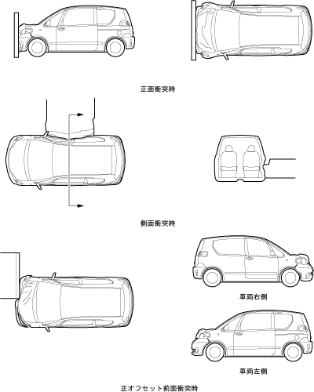
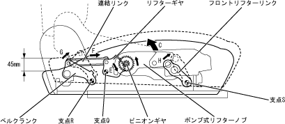

安全性
ブレーキ概要
ブレーキ概要
●
4WD車は，ドライブトレーンの追加およびフロアボデー形状の変更に合わせて，ブレーキ配管とパーキングブレーキケーブルの経路を一部変更しました。その他の仕様は2WD車と同様です。
●
2WDのオートレベリングシステム装着車は，ハイトコントロールセンサーの装着に合わせて，ブレーキ配管を一部変更しました。
EBD付きABS概要
EBD付きABS概要
●
4WD車に採用のEBD（Electronic Brake force Distribution : 電子制御制動力配分制御）付きABSシステムに，Gセンサーを設定しました。
●
4WD車のリヤ車輪速センサーに，フロント車輪速センサーと同様のローター＆スティックタイプセンサーを設定しました。
システムの主要構成部品と機能
構成部品
機 能
Gセンサー（4WD車）
車両の減速度を検出し，スキッドコントロールコンピューターに入力します。
TRC ＆ VSC ＆ ブレーキアシスト概要
TRC ＆ VSC ＆ ブレーキアシスト概要
●
スキッドコントロールコンピューターが各センサーからの信号を処理し，ABS，TRC，VSCおよびブレーキアシストのブレーキ制御を行います。また，エンジンコントロールコンピューターと通信を行い制御信号を出力します。
システム全体の主要構成部品と機能
構成部品
機 能
車輪速センサー
車輪速を検出し，スキッドコントロールコンピューターに入力します。
ヨーレートセンサー ＆ リニアGセンサー
車体のヨー角速度(自転運動)および前後左右の加速度を検出してスキッドコントロールコンピューターに入力します。
パーキングブレーキスイッチ
パーキングブレーキの作動を検出し，スキッドコントロールコンピューターに入力します。
ストップランプスイッチ
ブレーキ操作状態を検出し，スキッドコントロールコンピューターに入力します。
ステアリングセンサー
ステアリングの操舵角・操舵方向を検出し，スキッドコントロールコンピューターに入力します。
マスターシリンダー圧力センサー
マスターシリンダーの圧力を検出し，スキッドコントロールコンピューターに入力します。
TRC OFFスイッチ
TRCのON/OFFを切り替えます。
コンビネーションメーター
コンビネーションメーター内にスリップインジケーターランプ，ブレーキウォーニングランプ，ABSウォーニングランプ，VSCウォーニングランプを設定しました。
ブレーキアクチュエーター
スキッドコントロールコンピューターの出力信号により，4輪それぞれのホイールシリンダーの油圧を制御します。
モーター駆動リレー
ブレーキアクチュエーターのポンプモーターへ電源を供給・遮断します。
モーター遮断リレー
ブレーキアクチュエーターのポンプモーターへの電源供給を遮断します。
ソレノイドリレー
ブレーキアクチュエーターのソレノイドバルブへ電源を供給します。
VSCブザー
VSCが作動中であることをブザーの断続音によりドライバーに知らせます。
スキッドコントロール コンピューター
各センサーからの信号を処理し，ABS・TRC・VSC・ブレーキアシストのブレーキ制御を行います。また，エンジンコントロールコンピューターと通信を行い制御信号を出力します。
エンジンコントロール コンピューター
スキッドコントロールコンピューターと通信することにより，TRCおよびVSC作動の時にエンジン出力の制御を行います。
DLC3
診断ツールを接続し操作することにより，ダイアグノーシスコード，コンピューターのデータを読み出すことができます。
SRSエアバッグ概要
SRSエアバッグ概要
●
運転席および助手席にSRSエアバッグ ＆ プリテンショナー ＋ フォースリミッター付きシートベルトを標準設定しました。
●
廃車時のエアバッグ廃棄のため，廃棄ツールとの通信，廃棄処理機能を設定しました。
SRSエアバッグ ＆ プリテンショナー付きシートベルト概要
SRSエアバッグ ＆ プリテンショナー付きシートベルト概要
●
SRSエアバッグシステムは，運転席，助手席SRSエアバッグASSY，センターエアバッグセンサーASSY，フロントエアバッグセンサーおよびプリテンショナー ＋ フォースリミッター付きシートベルトなどで構成されています。
主要構成部品と機能
構成部品
機 能
スパイラルケーブル
センターエアバッグセンサーASSYからの点火信号を運転席SRSエアバッグASSYに伝達します。
運転席，助手席SRSエアバッグASSY
インフレーターとバッグにより構成されています。センターエアバッグセンサーASSYからの点火信号からインフレーターが発生したガスにより瞬時にバッグを膨らませ，搭乗者への衝撃を緩和します。
プリテンショナー ＋ フォースリミッター付きシートベルト
センターエアバッグセンサーASSYからの点火信号によりガスジェネレーターを点火させ，瞬時にシートベルトを巻き取り搭乗者の拘束効果を高めます。また，フォースリミッター機構により乗員への衝撃を緩和します。
SRSエアバッグウォーニングランプ （コンビネーションメーターに内蔵）
システム異常時，点灯または点滅してドライバーに警告します。
フロントエアバッグセンサー
衝突時の減速度を検出して，点火判定をするための信号をセンターエアバッグセンサーASSYに送ります。
センターエアバッグセンサーASSY （コンピューター）
セーフィングセンサー，点火判定回路などにより構成されています。セーフィングセンサーが衝突時の減速度を検出するとともに，フロントエアバッグセンサーからの信号を基に点火判定を行い，SRSエアバッグASSYおよびプリテンショナー＋フォースリミッター付きシートベルトに点火信号を送ります。 システム異常時，ダイアグノーシスモードに切り替えることによりシステムの故障診断を行います。
衝突安全ボデー（GOA）
衝突安全ボデー（GOA）
●
クラッシャブル化したボデー前・後部と高剛性化したキャビン各部により，衝突時のエネルギーを効果的に吸収・分散し，キャビン部の変形を最小限に抑える衝突安全ボデー（GOA）を採用しました。
●
コンピューターによる衝突シミュレーションと数多くの実車試験を基に，正面・側面衝突はもとより，車両の片側だけに衝撃を受けるオフセット前面衝突時においても衝突時のエネルギーを効果的に吸収・分散させる合理的なボデー構造としました。

前部エネルギー吸収構造
・
フロントサイドメンバーの前端部に大型のフロントバンパーリインホースメントを採用し，衝突時のエネルギーを左右のフロントサイドメンバーに効率良く分散させる構造としました。
・
フロントサイドメンバーは，全体をストレート形状にするとともに，前端部にクラッシュビードを設定して，衝突時のエネルギーを前部で効率よく吸収する構造としました。また，後部はフロントサイドメンバーリインホースメントを設定し，二重閉じ断面を構成することで剛性を確保しました。
・
エネルギー吸収効率の高い大型B字型断面のフロントバンパーリインホースメントの設定や，フロントサイドメンバーの座屈コントロール（クラッシュビードの採用）により，ストローク量を低減し，バリア侵入を低く抑えました。これにより，低速衝突時において大物部品を壊れにくい構造としました。
サイド部エネルギー吸収構造
・
ドア開口部まわりは，リインホースメントをはじめとする高強度化した骨格部材を最適配置し，強度をアップするとともに，各ピラー断面内には各種リインホースメントを設定して，断面積を大型化することにより，キャビン骨格の強度を確保しながら側面衝突時のエネルギーを効果的に吸収・分散させる合理的なボデー構造としました。
・
ドアは，ドアサイドインパクトプロテクションビームを配置して，衝突時のエネルギーを効率良く吸収・分散する構造としました。また，ベルトライン部やドアパネル内部のリインホースメントを最適配置することにより，ドア強度を確保しました。
ブレーキペダル後退低減構造
ブレーキペダル後退低減構造
●
前面衝突時にブレーキペダルを下方に移動させることで，ブレーキペダルの後退量を最小限に抑える“ブレーキペダル後退低減構造”を採用し，ドライバーの下肢部に対する衝撃の緩和をはかりました。
●
衝突時におけるエンジンなどの後退により，ブレーキブースター部分が押し込まれるとブレーキペダルサポートとインストルメントパネルリインホースメントを固定しているクリップ（ボルト）がブレーキペダルサポートから離脱し，ブレーキペダルサポートは，そのままガイドプレートに沿って後方下側に移動します。これにより，ブレーキペダル踏み面は，前方下側に移動するものとしました。
フロントシート
フロントシート
●
全車，シートカラーからモノトーンを廃止しました。
マニュアルリフター機構
・
シートを上げる場合，ポンプ式リフターノブを矢印C方向に操作することにより，連動してピニオンギアが同方向に回転します。これにより，リフターギヤは支点Qを中心にして矢印E方向に回転します。
・
リフターギヤには連結リンクが取り付けられており，リフターギヤが矢印E方向に回転することで，連結リンクがF方向に移動し，ベルクランクは支点Rを中心に矢印G方向に回転します。ベルクランクが矢印G方向に回転してシート後端を持ち上げるのに連動して，フロントリフターリンクが支点Sを中心に矢印H方向に回転し，シート全体がリフトアップします。なお，ポンプ式リフターノブとピニオンギヤ連動部にはブレーキ機構を組み込んでおり，シートクッションからの荷重に対してピニオンギヤが反転することはありません。
・
シートを下げる場合は，ポンプ式リフターノブを矢印C方向と逆方向に操作します。なお，リフター調整量は45mmとしました。

助手席ロングスライドシート給電機構
・
助手席シートスライド量が小さい場合，シートへ給電するハーネスは常にシート下のスペースに収まっており，ハーネスが外に露出することはありません。
・
助手席シートスライド量が大きい場合でもスライド中にハーネスがシート下から露出しないように，ロングスライドシート給電構造を採用しました。
・
カーペット下に固定された給電ケース内で，ワイヤーハーネスはU字に配索されています。ワイヤーハーネスの端末は，一方が給電ケースに固定，もう一方は，ケース側可動プロテクター・シート側固定プロテクターの順につながれています。
・
シートをスライドさせると，ワイヤーハーネスは可動プロテクターと固定プロテクターとともにレールに沿って動きます。このとき，2つのプロテクターはひもでつながれており，スライド時にワイヤーハーネスに直接負荷がかからない構造となっています。
・
このように，ロングスライドシートにおいてワイヤーハーネスがシート外に露出しない構造としました。